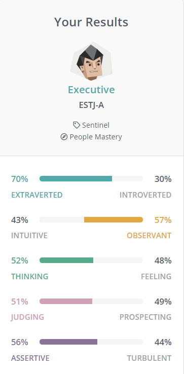
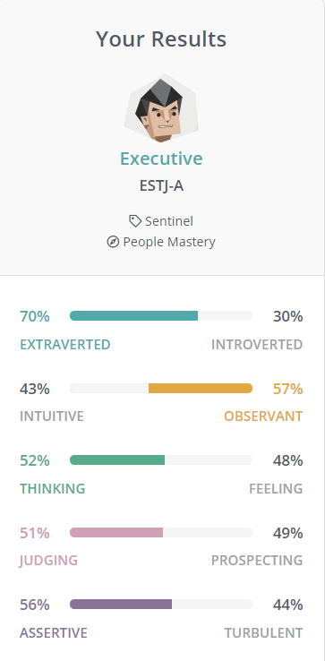
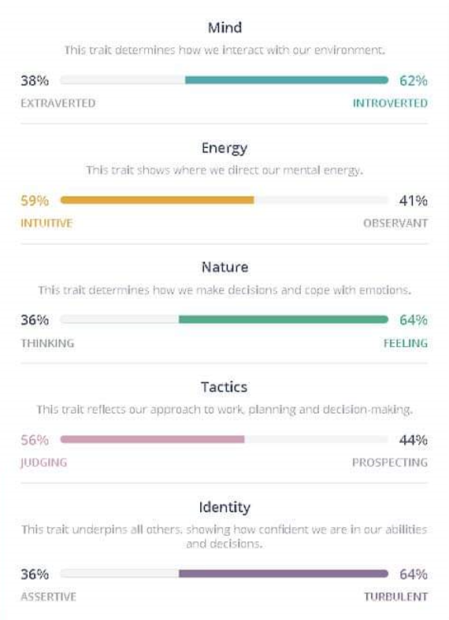
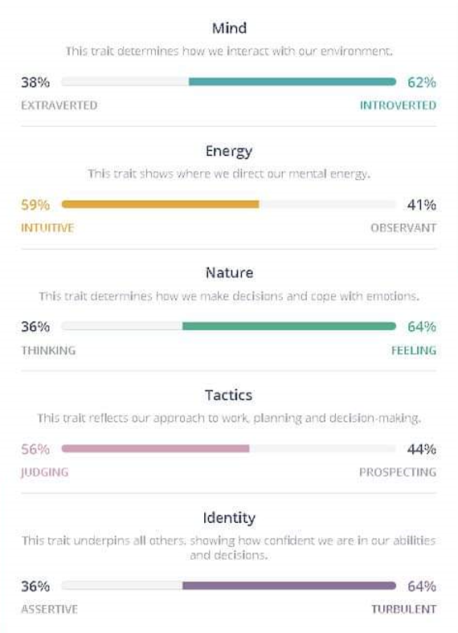

What does it do?
In recent years, in the development of technology, people are no stranger to Artificial Intelligence (AI) and Machine Learning. To begin with, Artificial intelligence is the act of machines such as computer systems that imitates the act of humans [1]. On the other hand, Machine learning is an AI’s application that can develop itself by automatically studying and improving the experience through the development of computer systems by accessing the computer’s data and using it to learn for themselves [2]. The term “Artificial Intelligence” first appeared in the 1950s after Alan Turing, who is a young British polymath, suggested that people can solve issues and make decisions so why can not machines do the same thing [3]? The next 2 years, the term “Machine Learning” appeared after Arthur Samuel, an American computer scientist, thought about developing a computer program for playing checkers that could remember all positions it had observed [4]. The development of AI and Machine learning makes a positive change to society. It helps people solve problems faster, calculate, analyze data and give predictions for people with high accuracy.
Over the past few decades, the improvement of AI and Machine learning has affected society’s activities significantly. A number of businesses in many fields are willing to spend a billion dollars for AI and Machine learning for different purposes. For instance, Google Maps was developed by Where 2 Technologies until Google saw the potential and decided to buy the whole company in order to develop it; thus, at the moment, Google Maps has become an essential part with many drivers. Moreover, AI and Machine learning can also be used in some games such as Chess, Hello Neighbor, etc, in order to make enemies remember players’ solutions so that the game becomes more difficult and unpredictable. In Business fields, AI is used to make chat-bots and it helps companies resolve problems including customers’ complaints, place orders, etc [5]. Furthermore, AI and Machine learning has applied and developed in healthcare for a long time so as to help doctors diagnose diseases and evolve drugs to prevent different sicknesses and epidemics [6].
It can not be denied that the development of AI and Machine learning has a huge impact on the alteration in the world. In the following 3 years, AI will be extended and developed in a number of areas such as movies, cybersecurity, transportation, etc. For example, AI can apply to Netflix and the watchers can create their own custom movies by choosing the virtual actors and scenes that they like, and AI will rely on it to analyze and build a suitable storyline [7]. If AI guesses the films have a high capability to succeed, the studio might release it and have income; thus, the studios not only reduce the cost of hiring actors but also have revenue. On the other hand, the improvement of hackers has made cyberattacks become one of the most struggling issues that many organizations are nervous about. With the ability of automatic self-studying through the data in the computer, AI will be the key to prevent hackers and protect the data safely [8]. Furthermore, with AI, transportation such as trains, cars, planes, etc, will no longer need drivers in the future because AI will replace drivers and drive automatically [10].
In order to make the future of AI and machine learning possible, some technologies and developments are needed from humans. Firstly, developers need to improve the algorithm using AI and machine learning stronger. Moreover, because AI and machine learning only act like humans, there should be added emotional recognition functions that will allow them to determine how to treat individuals depending on their present mood.
What is the likely impact?
It can not be denied that the impact of AI and Machine learning has helped those technologies become potential in society. In economics, thanks to AI and Machine Learning, productivity and efficiency have increased and it is the premise to have more profit. A piece of prime evidence is the revenue of government and businesses in the Middle East which is about 320 million USD and it is expected to increase 2% total world benefits of AI by 2030 [11]. Moreover, in recent years, many household appliances and transportation have been applied to AI which demonstrates that AI and Machine learning brings alteration to our lives. For instance, with the benefits of voice recognition, AI and Machine learning are used to make the doors that will automatically open when people say the password. Another example is the self-driving cars which will drive when people speak or give the location to them.
The alteration of AI & Machine learning to human daily life will help people build a neat and orderly lifestyle. In the future, AI can be used in some items such as watches, earphones, smartphones, etc, and work as an assistant for users. By setting users’ daily routine or schedule, the items will be remembered and when the time comes, they will remind people to do the task. Moreover, it can be seen that supermarkets, as well as convenience stores, spend a hefty amount of their profit on importing products and employing cashiers and workers. Therefore, investing in AI and Machine learning can help those supermarkets and grocery stores reduce the money spent for hiring shop assistants and increase productivity.
Even though AI and Machine learning makes social change and adapts their improvement, they might significantly affect people who are low-tech and poor. Moreover, it can also influence children and teenagers in two ways. The positive way is that they will easily adapt to it while the harm is that they will live dependent on it. For example, when children live too dependent on AI and Machine learning, and one day there is no AI and Machine learning in the world, they will face many problems such as controlling their routine, studying, etc.
Despite the benefits of AI and Machine learning, it might cause some disadvantages for people. For instance, with AI and Machine learning, organizations are no longer hiring people, making the unemployed rate grow. Furthermore, if AI and Machine learning have errors, the production process will be stopped and it causes the loss of the company’s income and profits.
How will this affect you?
In my opinion, the development of AI and Machine learning will greatly influence me in the near future. Firstly, it helps me improve my productivity and efficiency in my study. For instance, when I have difficulty in my study, I can ask AI and Machine learning to help me through voice recognition and it will give me the solutions to solve the problem. Moreover, my learning style can be changed in a flexible way so that I can both study and play sports more than now. By setting my daily routine, AI and Machine learning will remind me to do the tasks. Also, I will apply AI and Machine learning to my home in order to improve security.
Honestly, with the increasing speed of the improvement of AI and Machine learning, my life will be changed significantly in the future. In order to catch up with the trend, I will have to spend a lot of money on those technologies, and the useful functions will support me to promote myself and save a lot of time. For instance, usually, I have to have breakfast before I drive to school. But now, with the support of AI, my motorbike will drive itself and I can deliberately have breakfast. Also, because I am an IT student, it will help me have more chances to discover and understand more about AI and Machine learning.
On the other hand, the change of AI and Machine learning will greatly affect my parents, especially my father. To be honest, while my mother can easily learn and use them, my father is a low-tech person and it will make me spend a lot of time instructing him how to use those technologies and explaining the benefits. After that, he will use and slightly adapt it. After using it for a long time, it will become familiar to him and when I teach him to use other equipment, he will learn it faster and easier than before.

.jpg) 

 
